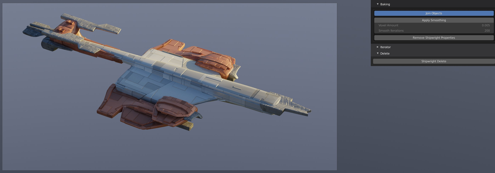
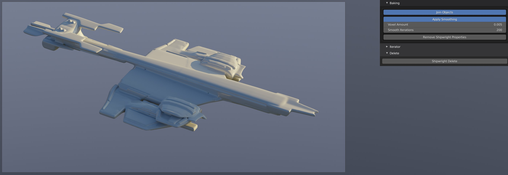

Joining, Smoothing, and Baking
 Because the Shipwright creates multiple objects, the joining and baking operations are designed to help you merge all these objects into one mesh and to apply smoothing operations if you choose to further sculpt or deform the image in any way.
Joining

The Join button when activated will automatically combine all the objects created in the Shipwright into one.
The Shipwright unjoined with multiple objects.
The Shipwright merged together with the Join operation.
Smoothing
Warning
The Smoothing operation is a processor intensive operation at lower Voxel settings, and can cause Blender to freeze for a long period of time.
Materials are not carried over during the operation as the object’s topology is completely remapped.
A Shipwright object with Smoothing Operations applied.
When Joined into one object, the Shipwright can automatically add the Remesh and Smooth modifiers to the object when the Apply Smoothing button is activated.
This creates smoothed mesh that can then be used for sculpting.
Parameters are as follows:
Voxel Size: The Remesh modifier uses Voxels (3D Pixels) to determine how to alter the mesh topology. Smaller values will produce higher levels of detail but will take longer to process. Be careful not to make the values too low (e.g., less than 0.01).
Smooth Iterations: This controls the number of times the smooth operation is applied to the retoplogised mesh. Higher levels will produce a smoother result.
Baking
If you are ready for your Shipwright object to be taken to the next stage of editing in Blender and no longer wish for it to be changed through the panel, you can perform one of the following operations:
Remove Properties: This wll remove the properties from the object or objects so that the panel will no longer change it, leaving the deform lattice and any mirroring or other modifiers intact.
Collapse Shipwright: This will remove the properties and also collapse all modifiers for the Shipwright object.